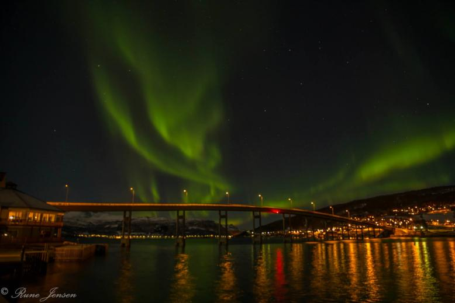

Коттеджи
Услуги
Цены (в норвежских кронах)
Коттедж:плата за недельное проживание.
NOK. 9470
Коттедж: плата за один день, не более 4 чел (+уборка). Более 4 чел. - дополнительная плата NOK 200, включающая в себя постельное бельё и экипировку.
NOK 1350
Уборка коттеджей.
NOK 600
Если вас интересует более длительное проживание или проживание вне сезона, пожалуйста, возможно связаться с администрацией и узнать расценки.
Аренда лодок
Услуги
Цены (в норвежских кронах)
Аренда на неделю
NOK. 5240
Аренда на один день
NOK. 750
Аренда на один вечер или одно утро
NOK. 400
Развлечения в зимнее время
Природное великолепие Фолдвика не перестаёт впечатлять и зимой - вы сможете поездить на собаках, походить на снегоступах, покататься на лыжах и сноуборде, а также увидеть северное сияние.
Другие зимние услуги:
Услуги
Цены (в норвежских кронах)
Горячая ванна на открытом воздухе, за 1 вечер
NOK. 1100
Костёр, разведённый в специальном месте, в 200 м. от коттеджа
NOK. 50
Место, откуда оптимально наблюдать северное сияние, без "загрязнений" от искусственного света; в 200 м. от коттеджа
бесплатно